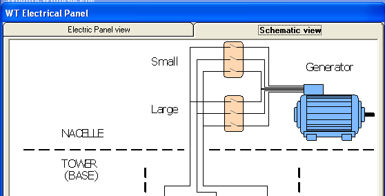
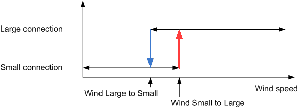

The simulator assumes dual speed (4 or 6 poles connection) squirrel cage generator directly connected to the Grid.
The purpose of this approach is to maximized the performance of the generator in the region of lower incoming energy (low wind). This performance gain can be observe comparing the generator transfer function with low torque in the two conditions (see Generator characteristics).
You can check that with 4 poles (Large) connection the power factor for a active power of 275 Kw in (see here) is 0.614, i.e, with a reactive power of -353 Kw. Instead in the 6 poles (Small) connection for a similar active power (250 kw) the power factor is of 0,867, i.e. the reactive power is only -157 Kw (see here).

Therefore for low winds the connection should be 6 poles (that's why is known as Small connection in this document) and for high winds the connection should be 4 poles (Large connection).
When to switch between these connections modes, at which wind speed? There are in fact two wind speeds to answer this question: that is a common behavior of any mechanical system that must switch among several "stable" states. If we fix a single value (say 6.4 m/s) then it may turn out that for wind speeds changing around that value the Wind Turbine would be changing too often. Changing state (Large to Small or Small to Large) imply stressing some components (bypass contactors must be opened and closed, thyristors must be operated, etc) and the Wind Turbine will stop production during the changing phase. The way to overcome this problem is setting a hysteresis around that value. Next figure shows this concept. The wind levels are also reflected in the wind limits figure.

The preset values in the Controller emulator are: 6.6 m/s for Small to Large and 6.2 m/s Large to Small.